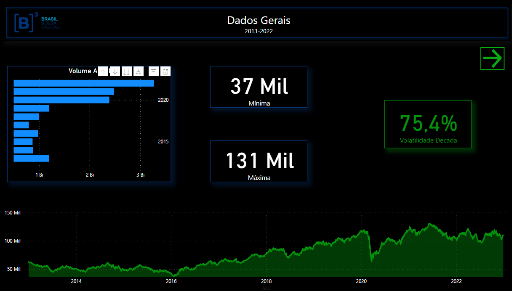

<link rel="stylesheet" href="./reset.css">
<link rel="stylesheet" href="./style.css">
<link rel="stylesheet" href="./Styles/headerProjetos.css">


<!-- ================= HEADER ==================== -->


    <header class="cabecalho">
        <nav class="cabecalho__menu">
            <a class="cabecalho__menu__link" href="./index.html">
                <c > </c>Pagina Inicial</a>
        </nav>
    </header>


    


<!-- ============ Analise Qualitativa =================== -->

<section  class="projetos_section"> 
    <div class="projetos__titulo"> 
    <p class="projetos__titulo B">Analise Qualitativa</p> </div>

    <a class="projetos__imagem" href="https://app.powerbi.com/view?r=eyJrIjoiZjM0NWJmM2QtMTg3Yi00ODVjLWI5MzMtNGI1YTRmM2NiMjc1IiwidCI6ImFhOTA5YTA2LTU5Y2YtNGYzNi1iZmE1LTkxNGNlMjQwMTVkYiJ9" target="_blank"> 
          </a>

    <div class="projetos__descrição"> 
        <p class="projetos__descrição B"> Esta foi uma análise qualitativa realizada para a empresa A&C, atuante no ramo de call center. Utilizando os dados disponibilizados
             e AUTORIZADOS pela mesma, utilizei a ferramenta "Microsoft Power BI" para realizar o tratamento, análise e interpretação dos dados relacionados à qualidade dos serviços
            prestados pelos seus colaboradores sob diversos aspectos. 
        </p>
    </div>
</section>


<!-- ============ IBovespa =================== -->

<section  class="projetos_section"> 

    <div class="projetos__titulo"> 
    <p class="projetos__titulo A">IBovespa (2013-2022)</p></div>

    <a href="https://app.powerbi.com/view?r=eyJrIjoiODU1YjA0NjgtNDAyNy00ODIwLWI0NjQtNTJlOTY0OGVkMTZjIiwidCI6ImFhOTA5YTA2LTU5Y2YtNGYzNi1iZmE1LTkxNGNlMjQwMTVkYiJ9"" target="_blank"> 
          </a>
        
    <div class="projetos__descrição">
        <p class="projetos__descrição A"> A seguinte análise trata do índice Bovespa ao longo da última década (2013-2022). 
            Os dados foram obtidos por meio do site "Infomoney". Nesta análise, encontram-se informações e análises gerais sobre
            a década, bem como dados específicos sobre cada ano. Incluem-se dados sobre volatilidade, valores máximos e mínimos 
            durante o período, volume financeiro e outras análises relevantes.  </p>
     </div>
</section>


<!-- =========== ANALISE ENADE ====================== -->

<section  class="projetos_section"> 
    <div class="projetos__titulo"> 
    <p class="projetos__titulo B">Enade 2021</p> </div>

    <a class="projetos__imagem" href="https://app.powerbi.com/view?r=eyJrIjoiYzViODU5ZjctN2ZiYS00MWQ4LWIwNWEtNjhmMTIyMmEyY2ZjIiwidCI6ImFhOTA5YTA2LTU5Y2YtNGYzNi1iZmE1LTkxNGNlMjQwMTVkYiJ9" target="_blank"> 
          </a>

    <div class="projetos__descrição"> 
        <p class="projetos__descrição B">?Neste projeto, realizei uma análise detalhada dos dados do Enade 2021, os quais são autênticos e foram fornecidos pelo Ministério da Educação. 
            Nessa análise, me aprofundei em cada informação disponível, examinando tanto os dados de forma abrangente quanto sob a perspectiva de categorias como administrativa,
            modalidade de ensino, grau acadêmico, entre outros.
        </p>
    </div>
</section>


<!-- ============ Analise Clube de livros =================== -->


<section  class="projetos_section"> 

    <div class="projetos__titulo"> 
    <p class="projetos__titulo A">Clube de livros</p></div>

    <a href="https://app.powerbi.com/view?r=eyJrIjoiMjQ0ZGU0N2ItYmQyMy00OTU2LTgwNjAtMWIzOWQxYzE3MjE2IiwidCI6ImFhOTA5YTA2LTU5Y2YtNGYzNi1iZmE1LTkxNGNlMjQwMTVkYiJ9" target="_blank"> 
          </a>
        
    <div class="projetos__descrição">
        <p class="projetos__descrição A"> Essa análise foi conduzida durante o estudo do curso Power BI da Alura, focado em um clube de livros. Nessa análise, 
            foram utilizados dados e informações relacionados a assinaturas, vendas, títulos e outros aspectos relevantes. Por meio dessa análise, conseguimos extrair 
            insights valiosos que podem ser aplicados para impulsionar o crescimento dessa organização.  </p>
     </div>
</section>


